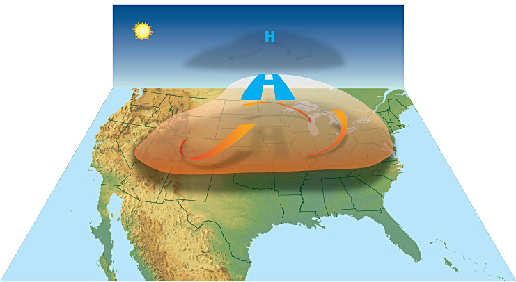
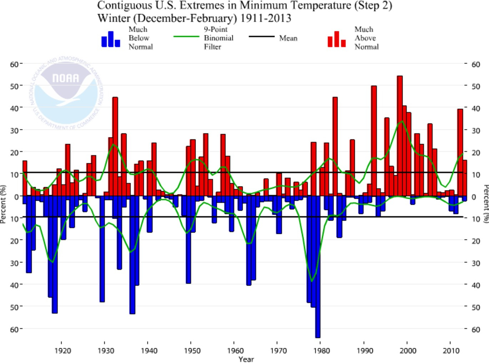
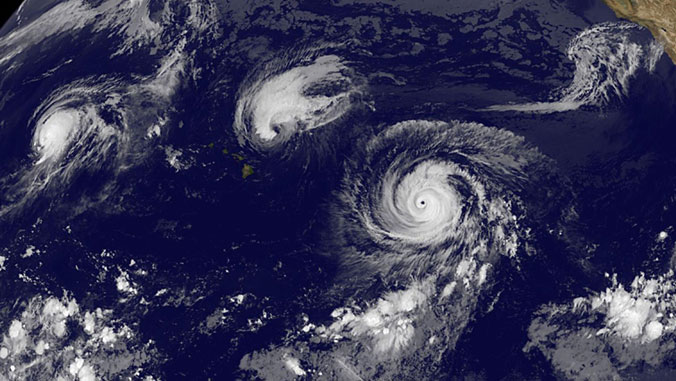
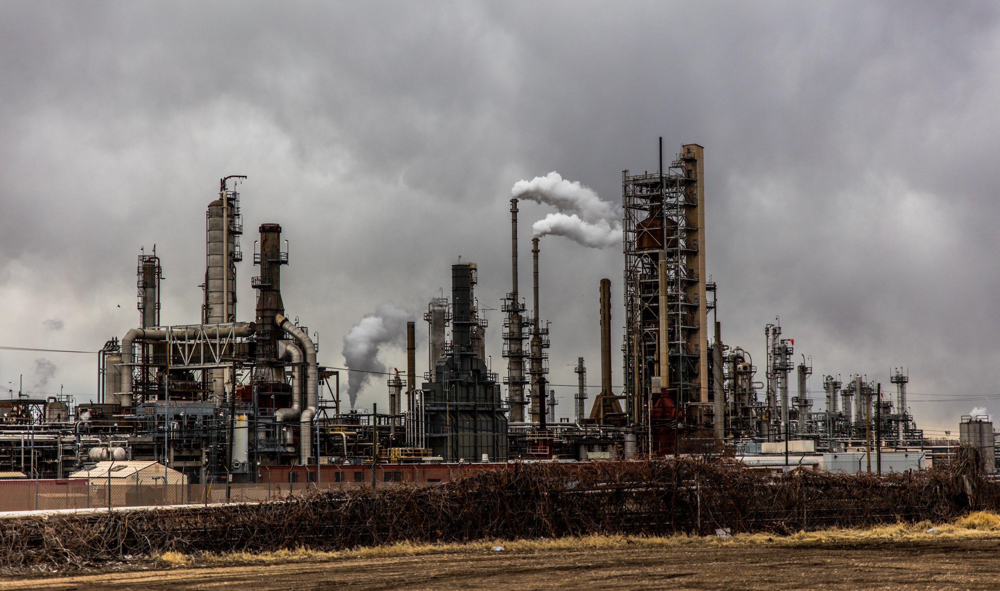

Extreme weather events - Heat waves
Excessive heat is often accompanied by high levels of humidity, but can also be catastrophically dry.
Because heat waves are not visible as other forms of severe weather are, like hurricanes, tornadoes, and thunderstorms, they are one of the less known forms of extreme weather.
Severe heat weather can damage populations and crops. Dried soils are more susceptible to erosion, outbreaks of wildfires can increase, the evaporation of bodies of water can be devastating to marine populations, livestock and other animal populations may decline as well.
Extreme weather events - Cold waves
A cold wave is a rapid fall in temperature within a 24-hour period requiring substantially increased protection to agriculture, industry, commerce, and social activities.
Cold waves that bring unexpected freezes and frosts during the growing season in mid-latitude zones can kill plants during the early and most vulnerable stages of growth.
A cold wave can cause death and injury to livestock and wildlife. Exposure to cold mandates greater caloric intake for all animals, including humans, and if a cold wave is accompanied by heavy and persistent snow, grazing animals may be unable to reach necessary food and water, and die of hypothermia or starvation.
Extreme weather events - Tropical cyclones
On June 12, 2020, the National Oceanic and Atmospheric Administration (NOAA) of the U.S. government predicted that, over the 21st Century, the frequency of tropical storms and Atlantic hurricanes would decline by 25 percent while their maximum intensity would rise 5 percent.
Increases in population densities increase the number of people affected and damage caused by an event of given severity. The World Meteorological Organization and the U.S. Environmental Protection Agency have in the past linked increasing extreme weather events to climate change. Kerry Emanuel in Nature writes that hurricane power dissipation is highly correlated with temperature, reflecting climate change.
Hurricane modeling has produced similar results, finding that hurricanes, simulated under warmer, high CO2 conditions, are more intense than under present-day conditions. Thomas Knutson and Robert E. Tuleya of the NOAA stated in 2004 that warming-induced by greenhouse gas may lead to the increasing occurrence of highly destructive category-5 storms.
Impact of human activity
One of the major effects of extreme weather is human activity. Burning fossil fuels is the most obvious way that humans have influenced extreme weather events.
Urban planning often amplifies flooding impacts, means that less of the water from incoming storms is absorbed by the land. However, wetland destruction along the coast can mean decreasing an area’s natural ‘cushion,’ thus allowing storm surges and flood waters to reach farther inland during hurricanes or cyclones.
As temperatures continue to rise due to anthropogenic emissions, heat waves could become more common in urban areas.
Overall, human activity can have a direct impact on weather patterns, so it's important to consider how human actions might exacerbate the effects and losses from extreme weather events.
_______________________________________________________
Climate change is sometimes misunderstood as being about changes in the weather. In reality it is about changes in our very way of life.
- Paul Polman